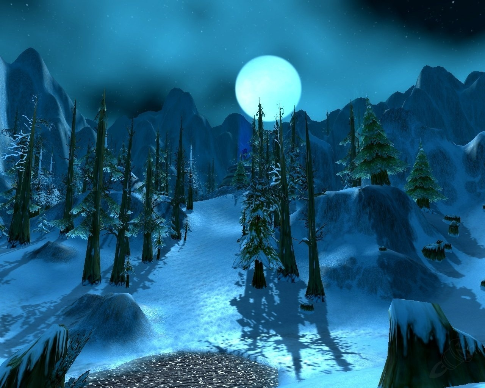
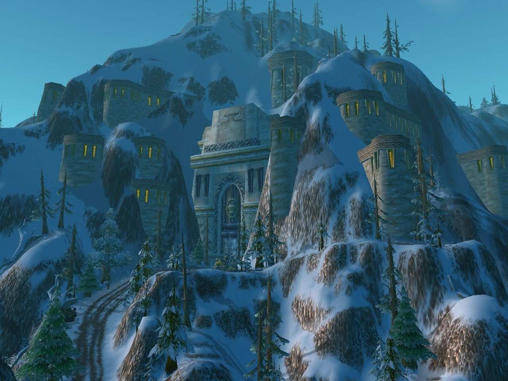

Elena Fernández
Guía de montaña que descubre un secreto escondido en los Picos de Europa.
Un videojuego de aventuras ambientado en los Picos de Europa
Descubre el juegoDesarrollado por Estudio Indie Asturiano, «Sombras de Asturias» ha ganado el premio al Mejor Juego Independiente del año. Guía a Elena a través de leyendas asturianas reales mientras explora un reino tallado en roca y niebla.
Mejor Juego Independiente 2026Guía de montaña que descubre un secreto escondido en los Picos de Europa.
Espíritu travieso de la mitología asturiana que pone a prueba a quien se adentra en el bosque.
Hada protectora de manantiales y fuentes, guardiana de los secretos del reino.

